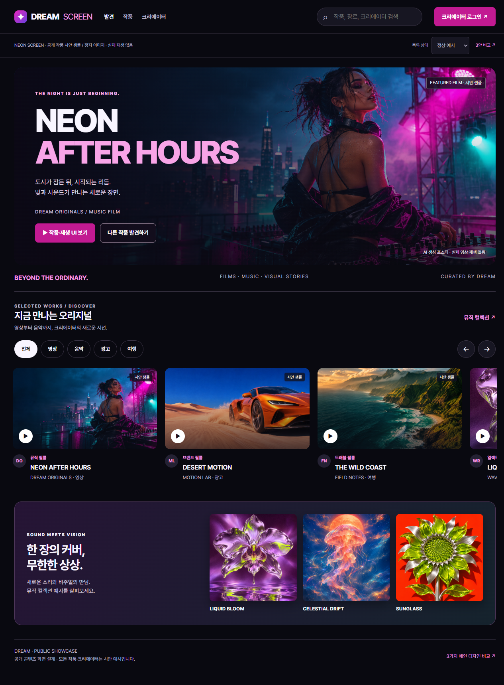
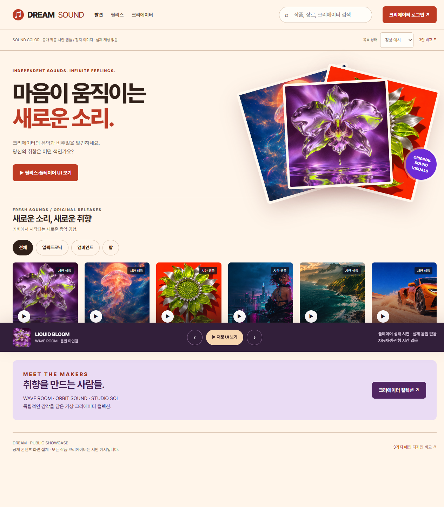
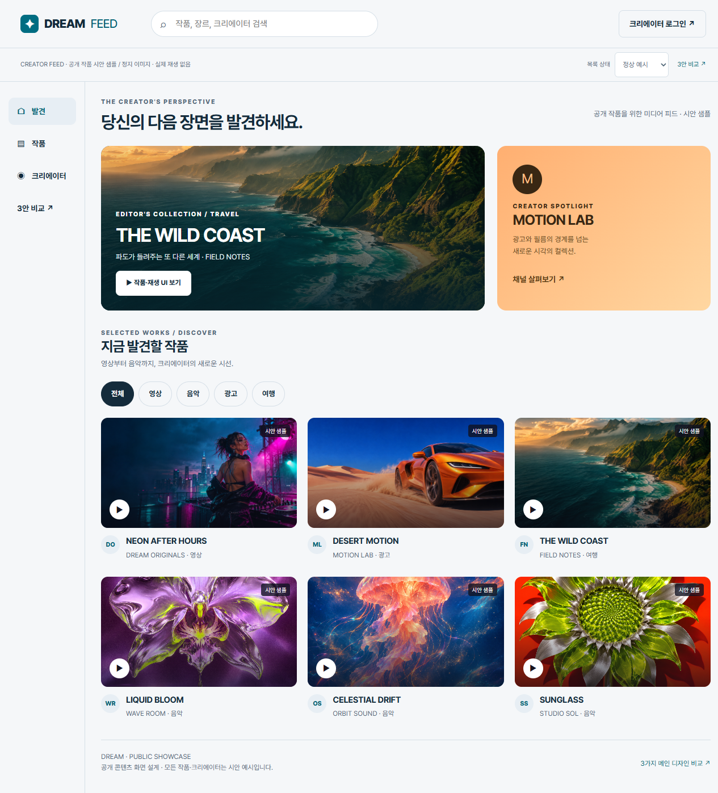

01 / 다크 네온 시네마
NEON SCREEN
대표 작품을 극장처럼 크게 보여 주고, 가로 레일로 다음 작품을 탐색합니다. 강한 영상미와 몰입감이 가장 중요한 브랜드에 어울립니다.
시안 체험 ↗방문자가 공개 콘텐츠를 탐색하는 메인 화면입니다. 공개 작품 갤러리를 중심으로 영상·음악·크리에이터를 보여 줍니다. 이전 작업 공간형 시안과 구분해 새로 구성했습니다.

대표 작품을 극장처럼 크게 보여 주고, 가로 레일로 다음 작품을 탐색합니다. 강한 영상미와 몰입감이 가장 중요한 브랜드에 어울립니다.
시안 체험 ↗

큰 썸네일·카테고리·검색·채널형 카드를 한 화면에. 다양한 콘텐츠가 메인에 노출되고 방문자가 바로 둘러보기 쉬운 방향입니다.
시안 체험 ↗검색창과 카테고리로 작품을 찾아보세요. 작품을 누르면 상세·재생 UI가 열리며 정지 이미지·로딩·연결 오류를 전환할 수 있습니다. 상단 목록 상태에서도 로딩과 오류를 확인할 수 있습니다.
실제 재생 자산이 없어 정지 이미지와 UI 상태만 시연합니다. 실제 음원·영상 재생, 조회수·좋아요, 로그인, 업로드·외부 게시를 실행하지 않습니다.